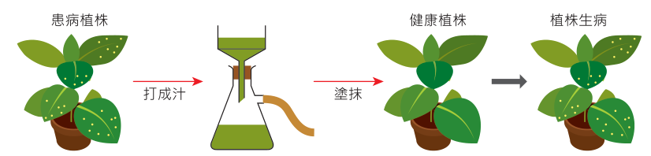

三、科學觀察推測與三大核心假說
【核心科學觀察】：樹幹顏色的深淺變化，會直接影響淺色蛾與深色蛾在族群中的生存比例。
【科學家提出的三種不同假說】：
• 假說 A（生理後天吸收假說）：胡椒蛾幼蟲從被污染的環境與食物中攝取了煤灰等污染物，導致其成蟲體色轉變呈棕黑色。
• 假說 B（毒性耐受度假說）：深色蛾體質較淺色蛾更具抗毒性，能耐受重金屬或二氧化硫等惡劣污染環境。
• 假說 C（天敵視覺天擇假說）：深色蛾在被煤灰污染燻黑的樹幹上具有保護色，較不易被鳥類發現捕食；反之，淺色蛾失去地衣掩護，極易暴露而被鳥類淘汰。
四、驗證假說 A ～ C 的可能實驗方案（探究實作設計）
| 待驗證假說 |
建議實驗探究步驟 |
預期結果與科學論證依據 |
驗證假說 A
(環境致色) |
① 分析污染區環境中主要污染物。
② 於實驗室飼養淺色蛾，並在幼蟲飼料中混入相應濃度污染物。
③ 觀察羽化成蟲體色是否改變，並交配觀察子代體色是否可遺傳。 |
實驗結果顯示：食入污染物的淺色蛾羽化後仍為淺色，證實體色為遺傳基因控制，推翻假說 A！ |
驗證假說 B
(毒性耐受) |
① 標記定量深色蛾與淺色蛾。
② 在無鳥類天敵的密封污染模擬室中飼養，記錄兩者的生理存活率。
③ 亦可在野外無鳥區使用「標記再捕捉法」追蹤存活個體數。 |
在排除天敵捕食條件下，兩者在污染環境中的存活率並無顯著差異，推翻假說 B！ |
驗證假說 C
(天敵天擇) |
① 在野外黑化樹林與未污染樹林分別釋放標記等量的深色蛾與淺色蛾。
② 引入鳥類天敵或直接觀察鳥類捕食行為。
③ 統計不同樹幹背景下兩者的被捕食率及再捕捉存活率。 |
黑樹幹上淺色蛾被捕食率極高；白樹幹上深色蛾被捕食率極高。數據完美支持假說 C（凱托威爾經典實驗證實天擇）！ |
💡 演化關鍵精義：「先有突變基因變異，後有環境篩選！」並不是環境污染使蛾變黑，而是原本就存在極低頻率的黑色基因，在環境黑化時轉為生存優勢被天擇保留。
【探討活動 3-2 隨堂檢定】
（ C ） 1. 伊波拉病毒經水解後可發現核糖、尿嘧啶、胺基酸等，請問何者屬於伊波拉病毒的基本構造？
(A) DNA + 蛋白質外殼
(B) DNA + RNA + 蛋白質外殼
(C) RNA + 蛋白質外殼
(D) RNA + 蛋白質外殼 + 套膜
【詳細解析】水解產物含「核糖」與「尿嘧啶 (U)」，代表其遺傳物質為 RNA；水解產物含「胺基酸」，代表具有蛋白質外殼。題目詢問的是所有病毒必備的「基本構造」，故為「RNA + 蛋白質外殼」。注意：套膜屬於附加構造，非所有病毒均有的基本構造。
【素養閱讀題組：諾羅病毒 (Norovirus) 的發現與流行病學】
1968 年美國俄亥俄州諾沃克爆發急性腸胃炎，科學家分離出一種微小病毒並命名為諾沃克病毒。近代流行的「諾羅病毒 (Norovirus)」，即為人類杯狀病毒科的一員。諾羅病毒基因體為單股 RNA（約 7.7 kb），編碼非結構蛋白與兩種主要結構蛋白（VP1 與 VP2）；其外殼呈正二十面體對稱（直徑 27～32 nm），不具外套膜。依據外殼蛋白 VP1 胺基酸特異性，可分為 GI～GV 五大亞型，其中 GI、GII、GIV 能感染人類，GII.4 變異株更常引起全球大流行。諾羅病毒主要經由糞口途徑高傳染力傳播（飛沫、污染飲水與食物），耐酸耐酒精，常引起劇烈嘔吐、腹痛與水瀉。
（ BC ） 2. 病毒可依核酸中心、套膜有無或形狀等分類，若將諾羅病毒依上述特性分類，可將其歸類為何種類型的病毒？（應選 2 項）
(A) DNA 病毒 (B) RNA 病毒 (C) 動物病毒 (D) 套膜病毒 (E) 噬菌體
【詳細解析】諾羅病毒遺傳物質為 RNA，宿主為人類及哺乳動物，且無套膜，故屬於 (B) RNA 病毒 與 (C) 動物病毒。
（ A ） 3. 近年曾引發大流行的諾羅病毒是 GII.4 次亞型的變異株，若欲鑑定此變異株與其他諾羅病毒的演化與親緣關係，下列何者為較理想的參考依據？
(A) VP1 的胺基酸序列 (B) DNA 的相似性 (C) 宿主是否為人 (D) 核苷酸的種類
【詳細解析】諾羅病毒為 RNA 病毒，不含 DNA；所有生物核酸組成之核苷酸種類相同；欲釐清同一病毒亞型間的演化分歧，以比對外殼核心蛋白 VP1 的胺基酸序列（或其 RNA 序列差異）最為精準。
（ BCE ） 4. 關於諾羅病毒的感染、預防與監控措施，哪些正確？（應選 3 項）
(A) 施打諾羅病毒疫苗有助於預防諾羅病毒感染
(B) 多用肥皂洗手有助於預防諾羅病毒感染
(C) 吸入患者嘔吐物之飛沫可能導致感染
(D) 患者均有發燒與腹瀉症狀
(E) 將病患隔離，排泄物與嘔吐物集中以漂白水消毒處理有助於減緩疫情擴大
【詳細解析】
• (A) 錯誤：目前醫學上尚未研發出上市有效的諾羅病毒疫苗。
• (B) 正確：諾羅病毒無脂質套膜，酒精消毒效果差，主要依靠肥皂搓洗帶走病原體。
• (C)(E) 正確：患者嘔吐物含有大量病毒顆粒，形成飛沫經口鼻吸入極易致病；因此需隔離病患並使用含氯漂白水消毒排泄物。
• (D) 錯誤：並非所有患者皆發燒，文獻顯示僅約半數患者伴隨發燒。
【探究實驗題組：病毒的發現歷程 —— 菸草鑲嵌病毒 (TMV)】
• 1883 年（梅伊爾）：發現罹患菸草鑲嵌病的汁液可傳染給健康植株，但用當時最高倍率的光學顯微鏡觀察，均未發現任何病原體細菌。
• 1892 年（伊凡諾斯基）：將病株汁液通過可完全截留細菌的「細瓷濾器」，濾液依然能使健康菸草致病！他稱之為「濾過性病毒」，但當時多數科學家仍認為是極微小的細菌或細菌分泌的毒素作祟。
• 1897 年（貝傑林克）：將濾液連續稀釋感染，發現致病能力未衰減，且病原體在無細胞之細菌培養基上無法生長，唯有在活植株內才能大量增殖！
• 1935 年（史坦力）：成功將菸草鑲嵌病毒提純結晶化，化學分析證明其僅由 RNA 與蛋白質組成！

▲ TMV 濾過性實驗流程（點擊放大）
💡 假說與爭論焦點：
• 假說 A：此病原體為一種比當時所知所有細菌更加微小的「未知細菌」。
• 假說 B：病原體本身已被濾器阻隔，是細菌釋放出的「化學毒素分子」引發疾病。
【探究實作題：假說檢驗與演繹論證】（點擊答案框可顯示手寫參考解答）
1. 參考貝傑林克的實驗結果，寫下可能推翻「假說 A（此病原體為比細菌更小的未知細菌）」的實驗證據，並說明其反駁原因。
【參考答案】：
• 推翻證據：該濾過性病原體在富含有機養分的「人工細菌培養基」上完全無法生長與繁殖。
• 論證原因：絕大多數細菌均具備獨立代謝與繁殖機能，可在無活細胞的合成培養基上分裂增殖；此病原體無法在培養基生長，顯示其缺乏獨立細胞代謝機能，不屬於一般細菌。
2. 參考貝傑林克的實驗結果，寫下可能推翻「假說 B（此病原體為細菌所釋放的化學毒素）」的實驗證據，並說明其反駁原因。
【參考答案】：
• 推翻證據：經過濾後的病株汁液，連續感染多代健康植株後，新植株汁液中的病原濃度與致病力完全沒有下降。
• 論證原因：若致病因子僅是無生命的化學毒素分子，在植物體內不會自行合成增加，隨著連續轉移與組織汁液稀釋，毒素濃度必會迅速稀釋降低直至喪失致病力；但實驗中病原濃度不減反增，證實致病原在植物體內發生了「自我複製與增殖」。
3. 從貝傑林克與史坦力的實驗結果，可看出病毒具有何種生物特徵？
【參考答案】：
病毒在「活宿主細胞內」具備繁殖增殖能力（能利用宿主能量與原料複製核酸並組裝子代），並能將致病特徵遺傳給子代。
🎓 科學探究核心素養總結：從胡椒蛾體色天擇的假說驗證，到菸草鑲嵌病毒的發現歷程，充分展現了生物學「觀察 ➔ 提出假說 ➔ 設計對照實驗 ➔ 收集客觀數據 ➔ 推翻或支持假說」的嚴謹邏輯。點擊全卷答案按鈕可一鍵開闔全書正解！